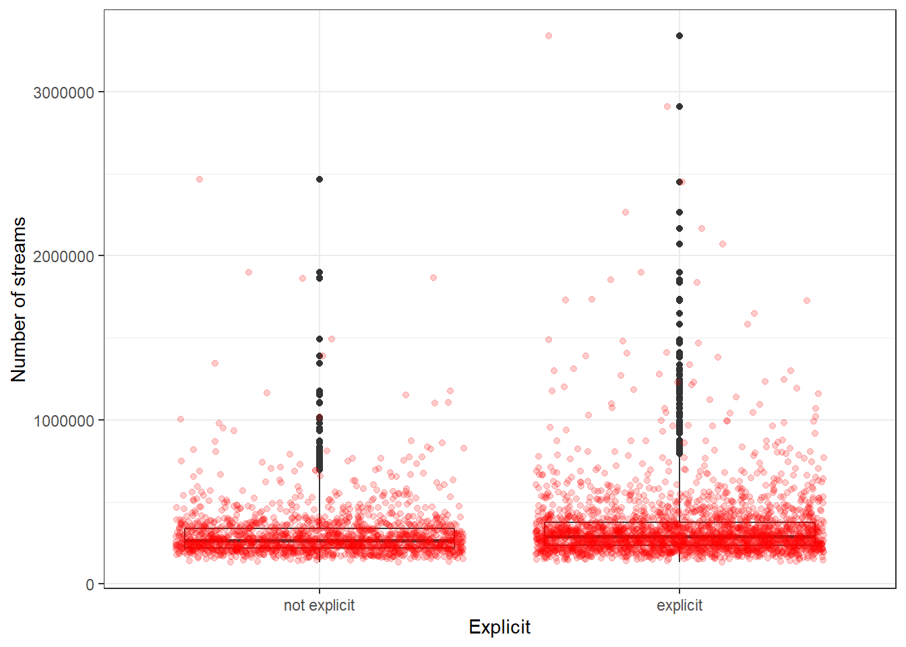
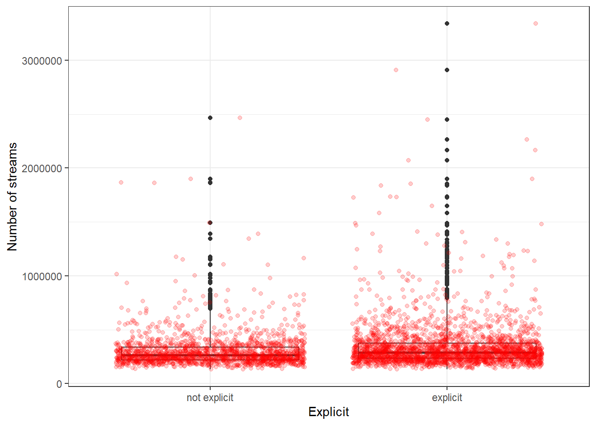

5 Random Variables
This chapter is primarily based on:
- Casella, G., & Berger, R. L. (2002). Statistical inference (Vol. 2). Pacific Grove, CA: Duxbury (chapters 1 & 3).
5.0.1 Why Random Variables?
Random variables are used to extract and simplify information that we obtain from an experiment. For example, if we toss five coins it would be tedious to say “I have observed heads, heads, tails, heads, tails”. With five coins this might still be a feasible way to convey the outcome of the experiment, but what about 500 coins? Instead we naturally condense the inforation into a random variable (even though we might not call it that) and say “I have observed three heads” or we define another random variable and say “I have observed two tails”. There are many ways to summarise the outcome of an experiment and hence we can define multiple random variables from the same experiment. We could also define a more “complicated” random variable that adds four points for each heads and one point for each tails. In general there are no restrictions on our function as long as it maps from the sample space to the real numbers. We distinguish two types of random variables, discrete and continuous, which are discussed in the following sections.
5.0.2 Tossing coins
Assume you toss a chosen number of coins (between 1 and 20). The tossing is the experiment in this case. The sample space consists of all the possible combinations of heads (“h”) and tails (“t”) given the number of coins. For a single coin:
\[ S = \{h, t\} \]
For two coins:
\[ S = \{hh, ht, th, tt\} \]
For three coins:
\[ S = \{hhh, hht, hth, thh, tth, tht, htt, ttt\} \]
and so on.
One of the outcomes in the sample space will be realized whenever one tosses the coin(s). The definition of random variables allows for many possibilities. An operation that takes any realization of the experiment (e.g. hht) as an input and gives us a real number as an outcome is a random variable. For this example we have chosen “number of heads” as the function but it could also be number of tails or (number of heads)+(4*number of tails). Lets call our function \(g\). Then
\[ g(hhh) = 3 > g(hht) = g(hth) = g(thh) = 2 > g(tth) = g(tht) = g(htt) = 1 > g(ttt) = 0 \]
for three coins.
So far we have only considered the possible outcomes but not how likely they are. We might be interested in how likely it is to observe 2 or less heads when tossing three coins. Let’s first consider a fair coin. With a fair coin it is just as likely to get heads as it is tails. Formally
\[ p(h) = p(t) = 0.5 \]
By definition the probabilities have to add up to one. If you think of probabilities in percentages, this just expresses that with 100% certainty something happens. If we toss a coin we are certain that we get either heads or tails and thus for a fair coin the chance is 50/50. If you set the slider to 3 and the probability of observing h (\(p(h)\)) to \(0.5\) the cumulative distribution function will update accordingly. The dots mean that at that point we are already at the higher probability and not on the line below. Let’s analyze the result. Between 0 and 0.2 lies the probability of observing less than or equal to 0 heads. Of course we cannot observe a negative number of heads and so this is just the probability of observing no heads. There is only one realization of our experiment that fulfills that property: \(g(ttt) = 0\). So how likely is that to happen? Each coin has the probability 0.5 to show tails and we need all of them to land on tails.
\[ p(ttt) = 0.5 * 0.5 * 0.5 = 0.125 \]
Another way of calculating the probability is to look at the sample space. There are 8 equally likely outcomes (for fair coins!) one of which fulfills the property that we observe 0 heads.
\[ p(ttt) = \frac{1}{8} = 0.125 = F_x(0) \]
The next “level” shows the probability of observing less than or equal to 1 head. That is the probability of observing 0 heads (\(p(ttt) = 0.125\)) plus the probability of observing one head (\(p(htt) + p(tht) + p(tth)\)). The probability of observing one head is given by the sum of the probabilities of the possibilities from the sample space. Let’s take a second to think about how probabilities are combined. If we want to know the probability of one event and another we have to multiply their respective probabilities such as in the case of \(p(ttt)\). There we wanted to know how likely it is that the first and the second and the third coin are all tails. Now we want to know the probability of either \(p(ttt)\) or \(p(htt)\) or \(p(tht)\) or \(p(tth)\). In the case that either event fulfills the condition we add the probabilities. This is possible because the probabilities are independent. That is, having observed heads (or tails) on the first coin does not influence the probability of observing heads on the others.
\[ p(ttt) = p(htt) = \underbrace{0.5}_{p(h)} * \underbrace{0.5}_{p(t)} *\underbrace{0.5}_{p(t)} = p(tht) = p(tth)= 0.125 \\ \Rightarrow F_X(1) = \underbrace{0.125}_{p(ttt) = F_X(0)} + \underbrace{0.125}_{p(htt)} + \underbrace{0.125}_{p(tht)} + \underbrace{0.125}_{p(tth)} = 0.5 \]
Now 4 out of the 8 possibilities (50%) in the sample space fulfill the property.
For \(F_X(2)\) we add the probabilities of the observing 2 heads (\(p(hht) + p(hth) + p(thh)\)).
\[ F_X(2) = \underbrace{0.5}_{F_X(1)} + \underbrace{0.125}_{p(hht)} + \underbrace{0.125}_{p(hth)} + \underbrace{0.125}_{p(thh)} = 0.875 = \frac{7}{8} \]
Since we are interested in less than or equal to we can always just add the probabilities of the possible outcomes at a given point to the cumulative distribution of the previous value (this gives us an idea about the link between cumulative distribution and probability mass functions). Now 7 out of 8 outcomes fulfill the property.
Obviously the probability of observing 3 or less heads when tossing 3 coins is 1 (the certain outcome).
This analysis changes if we consider a weighted coin that shows a higher probability on one side than the other. As the probability of observing heads increases the lines in the cumulative distribution shift downward. That means each of the levels are now less likely. In order to see why, let’s look at the probability of observing 2 or less heads when the probability of observing head is 0.75 (the probability of tails is thus 0.25) for each of the 3 coins.
\[ F_X(2) = \overbrace{\underbrace{0.25*0.25*0.25}_{p(ttt) = F_X(0) = 0.016} + \underbrace{0.75 * 0.25 * 0.25}_{p(htt)=0.047} + \underbrace{0.25 * 0.75 * 0.25}_{p(tht)=0.047} + \underbrace{0.25 * 0.25 * 0.75}_{p(tth)=0.047}}^{F_X(1) = 0.156}\dots\\ + \underbrace{0.75 * 0.75 * 0.25}_{p(hht) = 0.141} + \underbrace{0.75 * 0.25 * 0.75}_{p(hth) = 0.141} + \underbrace{0.25 * 0.75 * 0.75}_{p(thh) = 0.141} = 0.578 \]
What happens if you decrease the probability of observing heads?
The probability mass function defines the probability of observing an exact amount of heads (for all amounts) given the number of coins and the probability of observing heads. Continuing our example with 3 fair coins this means that \(f_X(0) = p(ttt) = 0.125\), \(f_X(1) = p(htt) + p(tht) + p(tth) = 0.375\), \(f_X(2) = p(hht) + p(hth) + p(thh) = 0.375\) and \(f_X(3) = p(hhh) = 0.125\). So instead of summing up the probabilities up to a given point we look at each point individually. This is also the link between the probability mass function and the cumulative distribution function: The cumulative distribution function at a given point (\(x\)) is just the sum of the probability mass function up to that point. That is
\[ F_X(0) = f_X(0),\ F_X(1) = f_X(0) + f_X(1),\ F_X(2) = f_X(0) + f_X(1) + f_X(2),\ \dots\\ F_X(x) = f_X(0) + f_X(1) + \dots + f_X(x) \]
A more general way to write this is:
\[ F_X(x) = \sum_{i=0}^x f_X(i) \]
5.0.3 Sum of two dice
Another example for a discrete random variable is the sum of two dice throws. Assume first that you have a six sided die. The six values it can take are all equally probable (if we assume that it is fair). Now if we throw two six sided dice and sum up the displayed dots, the possible values are no longer all equally probable. This is because some values can be produced by more combinations of throws. Consider the value 2. A 2 can only be produced by both dice displaying one dot. As the probability for a specific value on one die is \(\frac{1}{6}\), the probability of both throws resulting in a 1 is \(\frac{1}{6} * \frac{1}{6} = \frac{1}{36}\). Now consider the value 3. 3 can be produced by the first dice roll being a 1 and the second being a 2 and by the first roll being a 2 and the second a 1. While these may seem like the same thing, they are actually two distinct events. To calculate the probability of a 3 you sum the probabilities of these two possibilities together, i.e. \(P\{1,2\} + P\{2,1\} = \frac{1}{6} * \frac{1}{6} + \frac{1}{6} * \frac{1}{6} = \frac{2}{36}\). This implies that a 3 is twice as probable as a 2. When done for all possible values of the sum of two dice you arrive at the following probabilities:
\[ P(x) = \begin{cases} \frac{1}{36} & \text{if }x = 2 \text{ or } 12 \\ \frac{2}{36} = \frac{1}{18} & \text{if } x = 3 \text{ or } 11\\ \frac{3}{36} = \frac{1}{12} & \text{if } x = 4 \text{ or } 10\\ \frac{4}{36} = \frac{1}{9} & \text{if } x = 5 \text{ or } 11\\ \frac{5}{36} & \text{if } x = 6 \text{ or } 8\\ \frac{6}{36} = \frac{1}{6} & \text{if } x = 7\\ \end{cases} \]
To see what this looks like in practice you can simulate dice throws below. The program randomly throws two dice and displays their sum in a histogram with all previous throws. The longer you let the simulation run, the more the sample probabilities will converge to the theoretically calculated values above.
5.0.4 Discrete Random Variables
A random variable is discrete if its cumulative distribution function is a step function as in the plot below. That is, the CDF shifts or jumps from one probability to the next at some point(s). Notice that the black dots indicate that at that specific point the probability is already at the higher step. More formally: the CDF is “right-continuous”. That is the case for all CDFs. To illustrate this concept we explore the plot below. We have a discrete random variable as the CDF jumps rather than being one line. We can observe integer values between 0 and 10 whereas the probability of observing less than or equal to 0 is almost 0 and the probability of observing less than or equal to 10 is 1. The function is right continuous: Let’s look at the values 4 and 5 for example. The probability of observing 4 or less than 4 is just under 0.4. The probability of observing 5 or less is just over 0.6. For further examples see tossing coins and sum of two dice

For discrete random variables the function that defines the probability of each event is called the probability mass funciton. Notice that the “jumps” in the CDF are equivalent to the mass at every point. It follows that the sum of the mass up to a point in the PMF (below) is equal to the level at that point in the CDF (above).

5.0.5 Continuous Case
The vigilant reader might have noticed that while the definition of a random variable allows for the function to map to the real numbers the coin and dice examples only uses mapping to the natural numbers. Just as with discrete random variables we can define continuous random variables by their cumulative distribution function. As you might have guessed the cumulative distribution function of a continuous random variable is continuous, i.e. there are no jumps.

One example for a continuous random variable is the average profit of a store per week. Let’s think of the possible values: Profit could be negative if, for example, the payment to employees exceeds the contribution margin accrued from the products sold. Of course it can also be positive and technically it is not restricted to any range of values (e.g. it could exceed a billion, be below negative 10,000 or anywhere inbetween). Below you can see some (simulated) profit data. Observe that the CDF looks continuous. The red overlay is the CDF of the normal distribution (see chapter on probability distributions) which was used for the simulation. The final plot is a histogram of the data with the normal denisty (again in red). It shows that profits around 500 are more likely (higher bars) and the further away from 500 we get the less likely it is that a certain profit will be observed in a given week. Recall the definition of the probability density function shows the probability of a given outcome.

5.0.6 Definitions
- Sample Space: The set of all possible outcomes of a particular experiment is called the sample space of the experiment (Casella and Berger 2002, 1). Denoted \(S\).
- Random Variable: A function from a sample space \(\left(S\right)\) into the real numbers (Casella and Berger 2002, 27). Denoted \(X\).
- Cumulative distribution function: A function that defines the probability that a random variable \(\left(X\right)\) is less than or equal to an outcome (\(x\)) for all possible outcomes (Casella and Berger 2002, 29). Denoted
\[ F_X(x) = P_X(X \leq x), \text{ for all } x \]
- Probability mass/density function: A function that defines the probability that a random variable \(\left(X\right)\) is equal to an outcome (\(x\)) for all possible outcomes. Denoted
\[ f_X(x)=P(X = x), \text{ for all } x \]
Go to:
References
Casella, George, and Roger L Berger. 2002. Statistical Inference. 2nd ed. Duxbury Pacific Grove, CA.